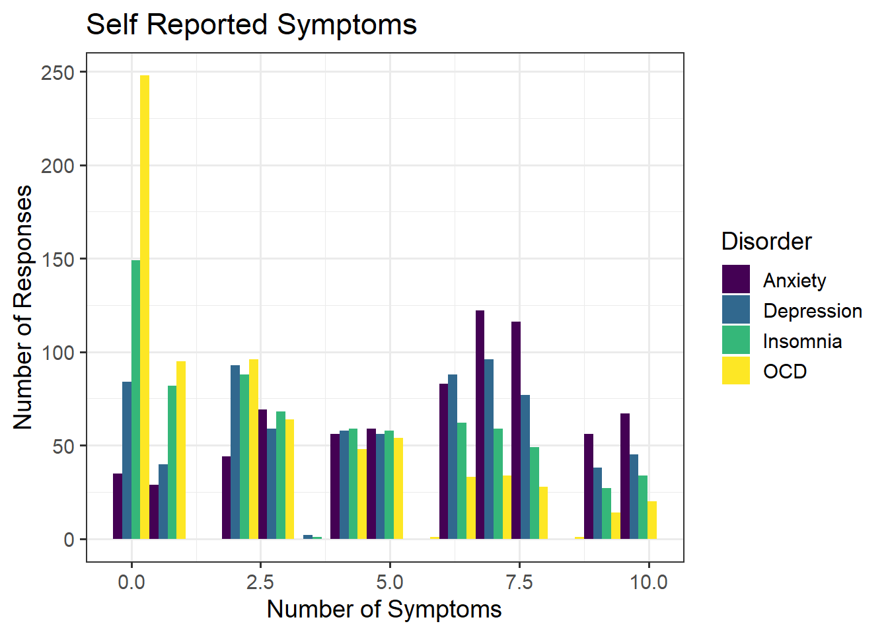

Music and Mental Health!
Abstract
This project aims to explore the frequency that individuals struggling with anxiety, depression, OCD, or insomnia listen to specific music genres. A survey administered online from a student from the University of Washington has gathered responses from over 700 people, gathering information about whether music has improved or worsened the state of individuals’ mental health. A Shiny App was created to aid in the exploration of responses, allowing users to choose genre, disorder, minimum number of symptoms reported, and the overall effect music has had on metal health. Findings show many people listening to Rock music overwhelmingly report music improving their mental health, regardless of reported symptoms. Further exploration reveals individuals who listen to video game music frequently report music worsening their mental health. It is important to note that these conclusions are drawn from self-reported data, which is prone to be effected by personal biases and uncontrollable outside variables.
Introduction
an introduction section, further introducing the data and giving the questions of interest you will be exploring in your project.
People listen to music for all sorts of reasons.
Anxiety disorder is a common disorder that affects people of all ages. People with this disorder experience chronic feelings of worry and persistent anxiousness that can affect how they live their day to day lives. Depression is a condition where individuals feel extremely unhappy, and often leads to a lack of interest in their regular routines and activities. Those who struggle with depression experience symptoms effecting their physical health as well, such as changes in sleep and appetite. Obsessive compulsive disorder, or OCD, is a condition that causes people to experience uncontrollable and reoccurring thoughts, or obsessions, that lead to compulsive or repetitive behaviors. Finally, insomnia is considered a sleep disorder that results in a struggle to fall asleep, staying asleep, or get good quality sleep. Individuals experiencing insomnia often have trouble completing daily tasks due to drowsiness and exhaustion throughout the day. All of these disorders are curable able to be treated through medication or the right form of therapy. Anyone struggling with any of these conditions should talk with a medical professional to find the right treatment solution for their symptoms.
Data
The data that is used in this exploratory analysis comes from Kaggle, and contains self-reported survey responses from 736 participants. The data was collected through an online google form created by Catherine Rasgaitis, an undergraduate student from the University of Washington. The form was posted in various Reddit forums, Discord servers, and social media platforms, as well as posters in public locations such as libraries and parks. Participants of all ages and locations were permitted to take the survey, gathering a final random sample ranging in ages from 10 to 89 years old (M = 25).
Variables included in the original data set:
Timestamp: date and time when form was submittedAgePrimary streaming service: choose from options of Apple Music, Pandora, Spotify, YouTube Music, Other streaming service, or do not use a streaming serviceHours per day: number of hours listened to music per dayWhile working: does the respondent listen to music while studying/working?Instrumentalist: Does the respondent play an instrument regularly?Composer: Does the respondent compose music?Fav genre: favorite or top genreExploratory: Does the respondent actively explore new artists/genres?Foreign languages: Does the respondent listen to music with lyrics in a language they are not fluent in?BPM: beats per minute of favorite genreFrequency [Classical]: How frequently the respondent listens to classical musicFrequency [Country]: How frequently the respondent listens to country music
…
Anxiety: Self-reported anxiety on a scale of 0-10Depression: Self-reported depression, on a scale of 0-10Insomnia: self-reported insomnia, scale of 0-10OCD: self-reported obsessive compulsive disorder, 0-10Music effects: does music improve/worsen mental health conditions?
Within the survey, people were asked to rate how much they listen to 16 different music genres by selecting Never, Rarely, Sometimes, or Very Frequently. They were also presented with symptoms of Anxiety, Depression, OCD, and Insomnia and asked to rank each disorder on a scale of 0 to 10; 0 representing not having experienced this disorder at all and 10 representing having experienced this disorder regularly or to an extreme.
Research Question
The primary goal of this analysis is to explore the genres that those who report experiencing symptoms of mental disorders listen to the most. Furthermore, we wish to determine how those listening to these musical genres have viewed the effects of music on their health: has it improved their well being, made it worse, or no effect at all?
Visualizations
To begin our analysis, we will first look into our demographic of the sample that has participated in the study. Since our analysis is focused around those experiencing symptoms associated with anxiety, depression, insomnia, and OCD, so those who reported no association to any of these disorders will be excluded from our future analysis. From doing this, 10 participants’ responses were removed from our data set. A plot showcasing the distribution of ratings for each disorder can be seen below.
From this visual we can see that those who experience anxiety mostly reported a rating around 7, along with those who reported symptoms of depression. The distribution of those reporting symptoms of OCD is skewed right, demonstrating that only a small number of people reported a higher rating of OCD. We can view a similar trend for those reporting symptoms of insomnia, although the distribution is not as strongly skewed as the responses for OCD. A table with the summary statistics for each disorder is shown below.
| disorder | M | SD |
|---|---|---|
| Anxiety | 5.92 | 2.726 |
| Depression | 4.86 | 2.996 |
| Insomnia | 3.79 | 3.078 |
| OCD | 2.67 | 2.845 |
explore musical genres?
a section showing relevant visualizations. Keep in mind that you do not need to write this as though it is a “step-by-step” thought-process. Instead, you should include your most interesting visualizations, along with interpretations for each. This section will likely be the longest, and, if you are answering multiple different questions of interest, you might break this section up into subsections.
- optionally, you can reference a Shiny app in this section, perhaps providing static visuals from your app. If you did build a Shiny app for your project, then this section is expected to be shorter than if you did not build a Shiny app. But, you should still describe major findings from the Shiny app.
Conclusion
a concluding section describing future work that you would complete if you had more time as well as any limitations to your visualizations.